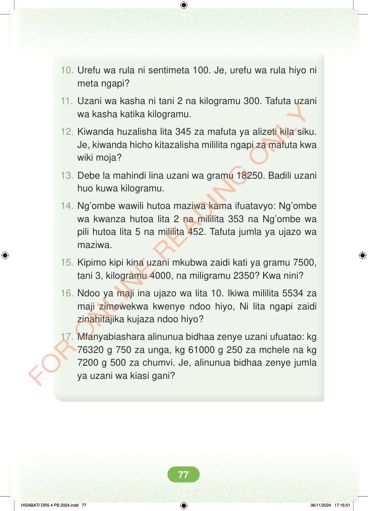

<!DOCTYPE html>
<html lang="sw-TZ"><head><meta charset="utf-8"><meta name="viewport" content="width=device-width,initial-scale=1">
<title>Hisabati: Kitabu cha Mwanafunzi Darasa la Nne</title>
<meta name="title-id" content="pg083_sec001"><meta name="page-section-id" content="86">
<link href="./content/tailwind_output.css" rel="stylesheet"><link href="./assets/libs/fontawesome/css/all.min.css" rel="stylesheet"><link href="./assets/fonts.css" rel="stylesheet">
<style>body{margin:0;background:#eef1ed}main{width:100%;display:flex;justify-content:center;padding:1rem 1rem 5rem;box-sizing:border-box}#content{width:100%;display:flex;justify-content:center}.pdf-page{position:relative;width:min(calc(100vw - 2rem),56rem);aspect-ratio:540.8980102539062/750.6610107421875;background:white;box-shadow:0 4px 24px #0002;overflow:hidden}.pdf-page img{position:absolute;inset:0;width:100%;height:100%;object-fit:fill}</style>
</head><body><main><h1 class="sr-only" id="page-heading">Ukurasa wa 83</h1><div id="content" class="opacity-0"><section role="article" data-section-type="pdf_accessible_page" data-section-id="pg083_sec001" aria-labelledby="page-heading" class="pdf-page"><p class="sr-only" data-id="pg083_gp001_tx001">10. Urefu wa rula ni sentimeta 100. Je, urefu wa rula hiyo ni meta ngapi? 11. Uzani wa kasha ni tani 2 na kilogramu 300. Tafuta uzani wa kasha katika kilogramu. 12. Kiwanda huzalisha lita 345 za mafuta ya alizeti kila siku. Je, kiwanda hicho kitazalisha mililita ngapi za mafuta kwa wiki moja? 13. Debe la mahindi lina uzani wa gramu 18250. Badili uzani huo kuwa kilogramu. 14. Ng’ombe wawili hutoa maziwa kama ifuatavyo: Ng’ombe wa kwanza hutoa lita 2 na mililita 353 na Ng’ombe wa pili hutoa lita 5 na mililita 452. Tafuta jumla ya ujazo wa maziwa. 15. Kipimo kipi kina uzani mkubwa zaidi kati ya gramu 7500, tani 3, kilogramu 4000, na miligramu 2350? Kwa nini? 16. Ndoo ya maji ina ujazo wa lita 10. Ikiwa mililita 5534 za maji zimewekwa kwenye ndoo hiyo, Ni lita ngapi zaidi zinahitajika kujaza ndoo hiyo? 17. Mfanyabiashara alinunua bidhaa zenye uzani ufuatao: kg 76320 g 750 za unga, kg 61000 g 250 za mchele na kg 7200 g 500 za chumvi. Je, alinunua bidhaa zenye jumla ya uzani wa kiasi gani? HISABATI DRS 4 PB 2024.indd 77 HISABATI DRS 4 PB 2024.indd 77 06/11/2024 17:16:51 06/11/2024 17:16:51</p></section></div></main><div class="relative z-50" id="interface-container"></div><div class="relative z-50" id="nav-container"></div><script src="./assets/offline-preloader.js?v=audiofix-20260824-1"></script><script src="./assets/scorm.js"></script><script src="./assets/base.bundle.local.js?v=audiofix-20260824-1"></script></body></html>